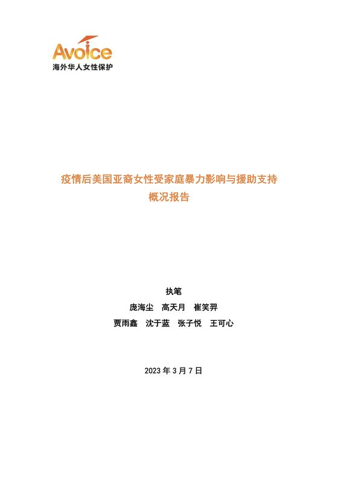
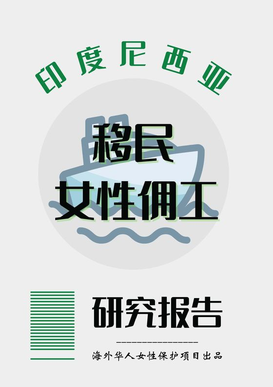
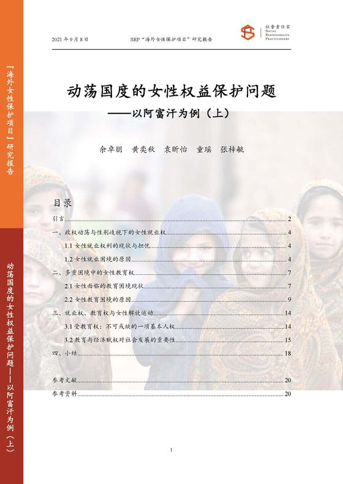
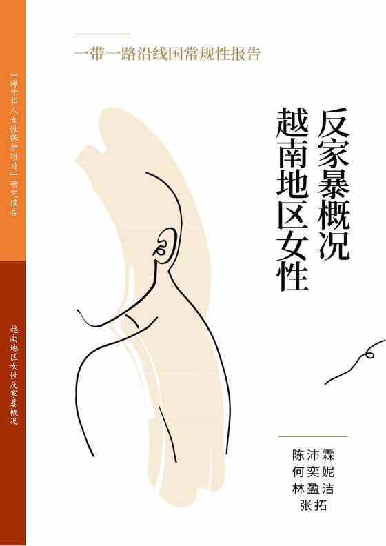
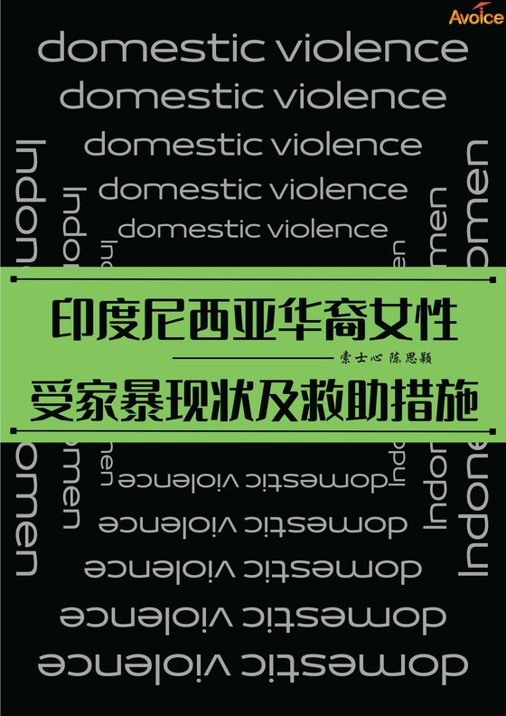
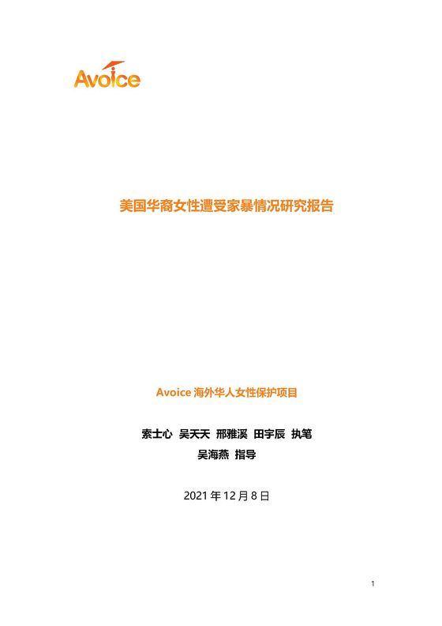
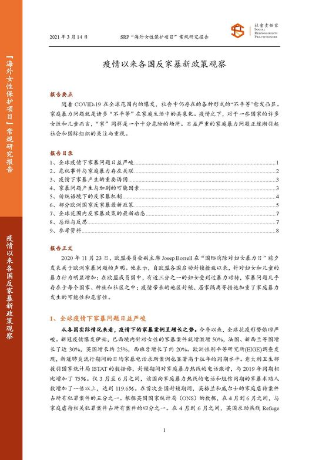
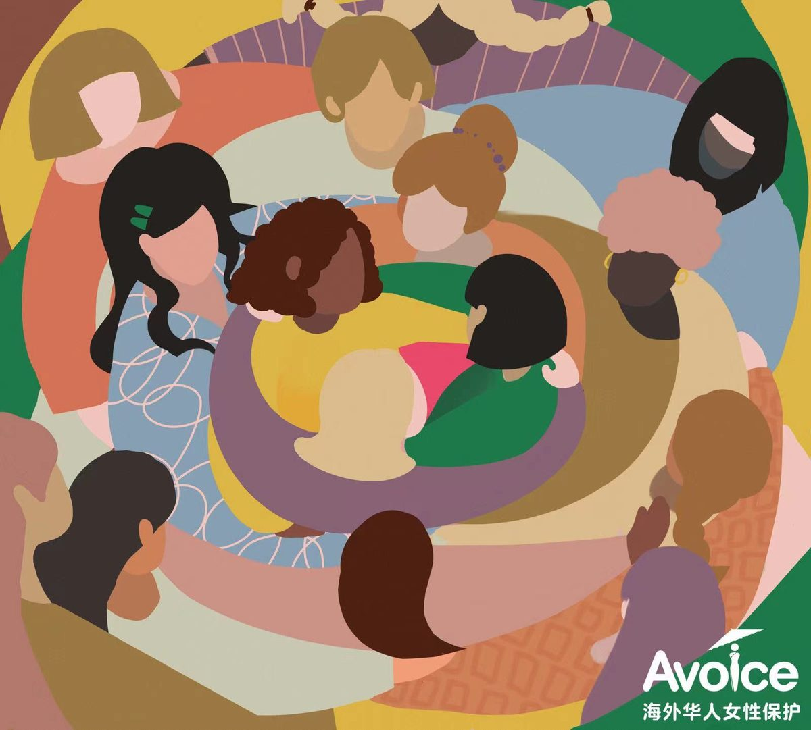

学术研究
研究聚焦新加坡、菲律宾、越南、马来西亚和阿富汗。
学术研究处研究家庭暴力和女性职场生存等议题，让我们的救助建立在实证之上。研究覆盖欧洲、北美、南美和亚太。
40份研究报告
34期月度评论
4个研究区域
12份报告可在此阅读
研究成果
关于性别暴力和歧视的国别、地区和个案研究。
报告地区202120222023

疫情后美国亚裔女性受家庭暴力影响与援助支持概况报告美国 · 发布于 2023年3月 美国
印度尼西亚专题报告——印尼女佣生存现状印度尼西亚 · 发布于 2022年12月 印度尼西亚“越南新娘”：跨国婚姻中的越南女性越南 · 发布于 2022年9月 越南
动荡国度的女性权益保护问题——以阿富汗为例（上）阿富汗 · 发布于 2022年7月 阿富汗动荡国度的女性权益保护问题——以阿富汗为例（下）阿富汗 · 发布于 2022年7月 阿富汗马来西亚华人女性家暴问题调查研究报告马来西亚 · 发布于 2022年7月 马来西亚新加坡女性家暴问题调查研究报告新加坡 · 发布于 2022年6月 新加坡菲律宾地区女性受家暴现状及救助措施菲律宾 · 发布于 2022年6月 菲律宾
越南地区女性反家暴概况越南 · 发布于 2022年6月 越南
印度尼西亚华裔女性家暴现状及救助措施印度尼西亚 · 发布于 2022年5月 印度尼西亚
美国华裔女性遭受家暴情况报告美国 · 发布于 2021年12月 美国
疫情以来各国反家暴新政策观察全球 · 发布于 2021年3月 全球学术研究处
学术研究处是 AWDPI 的核心部门之一，通过学术研究为项目设计与实施提供支持，为海外亚裔性别暴力受害者提供基于实证的解决方案。
成员来自多学科背景，在学术顾问的指导下，产出与家庭暴力、女性保护、性别平等相关的研究报告、科普文章和专业论文。
- 心理学
- 社会学
- 公共政策
- 公共健康
- 人类学
- 国际研究
- 新闻学
- 传播学
34
Avoice 性别平等与海外亚裔发展月评
每月汇总性别平等与海外亚裔社群相关的研究与资讯，已出版 34 期。

和我们一起帮助更多女性
成为合作伙伴或志愿者，资助一个项目，或帮我们传播。写信给我们，我们会找到最合适的合作方式。